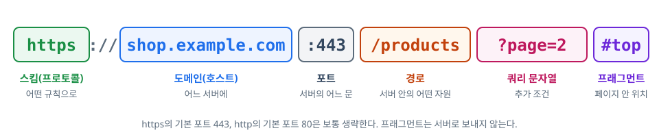

2장 · 웹의 동작 원리와 개발 도구웹은 어떻게 동작하나용어 정리인터넷 · 브라우저 · 서버 · URL — 주소를 치면 일어나는 일HTTP 요청과 응답 — 상태 코드 맛보기따라하기 — VS Code 기본 조작과 첫 HTML 파일정리와 체크리스트실습문제와 힌트 — 기본 · 필수 · 도전
2장. 웹의 동작 원리와 개발 도구
인터넷 · 브라우저 · 서버 · URL — 주소를 치면 일어나는 일
한 줄 요약
URL은 "어떤 규칙으로, 어느 서버의, 어떤 자원을" 달라는 주소입니다. 브라우저는 URL을 읽어 서버를 찾아가고, 받은 내용을 화면으로 그립니다.
1. 주소창에 Enter를 누르면
https://www.example.com을 입력했을 때 일어나는 일입니다.
| 단계 | 하는 일 | 그림 번호 |
|---|---|---|
| 1. URL 읽기 | 브라우저가 스킴(https), 도메인(www.example.com), 경로(/)로 나눈다 |
— |
| 2. IP 찾기 | DNS에 "www.example.com의 IP는?"을 묻는다 |
① |
| 3. 연결 · 요청 | 그 IP의 443번 포트에 연결하고 HTTP 요청을 보낸다 | ② |
| 4. 응답 받기 | 서버가 상태 코드와 HTML을 돌려준다 | ③ |
| 5. 화면 그리기 | 브라우저가 HTML을 읽고, 필요한 CSS · JS · 이미지를 다시 요청해서 화면을 완성한다 | ④ |
페이지 하나에 요청은 여러 번입니다. HTML을 받은 뒤, 그 안에 적힌 CSS · JS · 이미지 파일을 하나씩 다시 요청합니다.
2. URL 읽는 법

| 부분 | 예 | 뜻 |
|---|---|---|
| 스킴 (scheme) | https |
어떤 규칙(프로토콜)으로 통신할지 |
| 도메인 (host) | shop.example.com |
어느 서버에 갈지 |
| 포트 (port) | :443 |
그 서버의 어느 프로그램에게 갈지. 기본값이면 생략 |
| 경로 (path) | /products |
서버 안의 어떤 자원인지 |
| 쿼리 문자열 (query) | ?page=2 |
추가 조건. 이름=값을 &로 이어 붙인다 |
| 프래그먼트 (fragment) | #top |
페이지 안의 위치. 서버로 보내지 않는다 |
출처: MDN — URL이란?
예시로 읽어 보기
| URL | 읽는 법 |
|---|---|
https://search.naver.com/search.naver?query=git |
search.naver.com 서버의 /search.naver에게, 검색어(query)가 git인 결과를 달라 |
http://localhost:8080/api/posts/3 |
내 PC의 8080번 포트(나중에 만들 Spring 서버)에게 3번 글을 달라 |
쿼리 문자열에 한글이 들어가면 주소창에서는 한글로 보여도 실제로는
%EA%B9%83처럼 바뀌어 전송됩니다. 이것을 URL 인코딩이라고 합니다. 주소를 복사했을 때%가 가득한 이유입니다.
3. 브라우저가 받는 세 가지 파일
| 파일 | 역할 | 비유 | 배우는 장 |
|---|---|---|---|
| HTML | 내용과 구조 | 건물의 기둥과 방 배치 | 3장 |
| CSS | 모양과 배치 | 벽지, 가구 배치 | 3장 |
| JavaScript | 동작 | 전기, 자동문 | 4~7장 |
브라우저는 서버에서 받은 이 세 가지를 합쳐 화면을 그립니다. 서버가 보내는 것은 글자로 된 파일이고, 그것을 그림으로 바꾸는 것은 브라우저의 일입니다.
4. 정적 페이지와 동적 페이지
| 구분 | 정적 (static) | 동적 (dynamic) |
|---|---|---|
| 서버가 하는 일 | 저장된 파일을 그대로 보낸다 | 요청마다 새로 만들어 보낸다 |
| 예 | 회사 소개 페이지, 이 교안 사이트 | 내 장바구니, 검색 결과, 게시판 목록 |
| 이 과정에서 | 3~7장에서 만드는 HTML 파일 | 9장 Node.js, 10장 Spring |
검색 결과는 검색어마다 다르므로 미리 파일로 만들어 둘 수 없습니다. 그래서 서버가 DB를 조회해 그때그때 만듭니다. 이 과정의 후반부는 대부분 이 동적 서버를 만드는 일입니다.
핵심 정리
- URL = 스킴 + 도메인 + (포트) + 경로 + (쿼리) + (프래그먼트).
- 브라우저는 DNS로 IP를 찾고, 서버에 요청하고, 받은 HTML · CSS · JS로 화면을 그린다.
- 페이지 하나를 열 때 요청은 여러 번 일어난다.
localhost는 내 PC, 포트 번호로 프로그램을 구분한다.